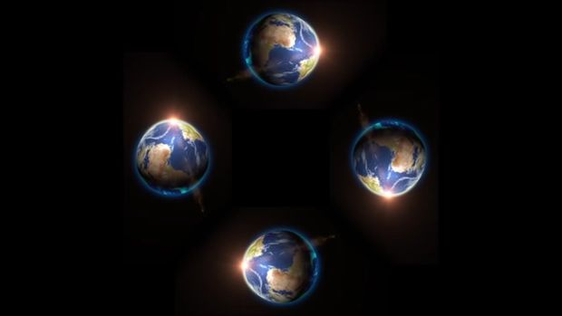

2015-10-20 - Nº 25
Editorial
Aqui está a Newsletter Nº 25 no seu formato habitual. Foram adicionados botões de partilha nas várias redes sociais, se gostar da Newsletter partilhe-a!
Esta Newsletter encontra-se mais uma vez disponível no sistema documenta do altLab. Todas as Newsletters encontram-se indexadas no link.
Esta Newsletter tem os seguintes tópicos:
Esta semana a Telsa lançou uma actualização no software do seu modelo S que já permite a condução autónoma. A Intel aprofunda a sua entrada no IoT com a colaboração com o Arduino para lançar o Genuino 101 que é baseado no micro-controlador Curie da Intel. A universidade de Cambridge apresenta um processo de baixo custo para impressão usando tinta a base de grafeno que permitirá entre outras coisas imprimir circuitos impressos. Na Newsletter desta semana iremos apresentar um projeto de maker que é Holograma 3D de muito baixo custo. Iremos construir um circuito para dotar o Raspberry Pi de capacidade de ler dados analógicos.
 João Alves ([email protected])
João Alves ([email protected])
O conteúdo da Newsletter encontra-se sob a licença  Creative Commons Attribution-NonCommercial-ShareAlike 4.0 International License.
Creative Commons Attribution-NonCommercial-ShareAlike 4.0 International License.
Novidades da Semana ^
Tesla Model S Software Version 7.0
"Model S is designed to to keep getting better over time. The latest software update, 7.0 allows Model S to use its unique combination of cameras, radar, ultrasonic sensors and data to automatically steer down the highway, change lanes, and adjust speed in response to traffic. Once you’ve arrived at your destination, Model S scans for a parking space and parallel parks on your command. Today’s update increases the driver’s confidence behind the wheel with features to help the car avoid hazards and reduce the driver’s workload. While Model S can’t make traffic disappear, it can make it a lot easier, safer, and more pleasant to endure."
Intel and Banzi just presented Arduino 101 and Genuino 101
"Today during Opening Conference at Maker Faire Rome, Josh Walden Senior Vice President of Intel Corporation and Massimo Banzi, co-founder of Arduino, announced the upcoming release of Arduino 101 (U.S.) and Genuino 101 (outside the U.S.). The board features a 32-bit Intel® Quark™ microcontroller for minimal power consumption, 384 kB of flash memory, 80 kB of SRAM (24kB available for sketches), an integrated DSP sensor hub, Bluetooth* Low Energy radio, and 6-axis combo sensor with accelerometer and gyroscope. We collaborated with Intel to provide the maker community an affordable learning and development board ideal for entry-level makers and education environments and also the first widely available development board based on the tiny, low-power Intel Curie module."
New graphene based inks for high-speed manufacturing of printed electronics
"A low-cost, high-speed method for printing graphene inks using a conventional roll-to-roll printing process, like that used to print newspapers and crisp packets, could open up a wide range of practical applications, including inexpensive printed electronics, intelligent packaging and disposable sensors. Developed by researchers at the University of Cambridge in collaboration with Cambridge-based technology company Novalia, the method allows graphene and other electrically conducting materials to be added to conventional water-based inks and printed using typical commercial equipment, the first time that graphene has been used for printing on a large-scale commercial printing press at high speed."
Ciência e Tecnologia ^
Harvard's Robot Bee Is Now Also a Submarine
"For the last several years, Harvard has been developing a robot bee. They’ve done some impressive work: their sub-paper-clip-sized, 100-milligram flapping-wing micro aerial vehicle is fully controllable down to a stable autonomous hover. It’s still tethered for power, and there’s no onboard autonomous control, but the robot flaps its wings and flies like an insect, which is awesome. Tiny robotic bugs have lots of potential for search and rescue, surveillance, and exploration, but what’s been all the rage recently is adaptive multi-modal robotics: robots that can creatively handle a combination of terrains, making them much more versatile. With some exceptions, robots are usually pretty bad at this, and with some exceptions, humans and animals are too. There are ground robots that can handle water, and a few flying robots that aren’t totally helpless on the ground, but so far, we haven’t seen much in the way of flying robots that are good swimmers. "
Chance effect of lab's fluorescent lights leads to discovery
"An accidental discovery of a "quantum Etch-a-Sketch" that may lead to the next generation of advanced computers and quantum microchips has been made by team of scientists from Penn State University and the University of Chicago. The researchers accidentally discovered a new way of using beams of light to draw and erase quantum-mechanical circuits on topological insulators, a unique class of materials with intriguing electronic properties. The research, led by Nitin Samarth, professor and Downsbrough Head of Physics at Penn State, and David D. Awschalom, Liew Family Professor and deputy director in the Institute of Molecular Engineering at the University of Chicago, was published in the October 9 issue of Science Advances, an online journal of the American Association for the Advancement of Science."
Discovery about new battery overturns decades of false assumptions

"New findings at Oregon State University have overturned a scientific dogma that stood for decades, by showing that potassium can work with graphite in a potassium-ion battery – a discovery that could pose a challenge and sustainable alternative to the widely-used lithium-ion battery. Lithium-ion batteries are ubiquitous in devices all over the world, ranging from cell phones to laptop computers and electric cars. But there may soon be a new type of battery based on materials that are far more abundant and less costly. A potassium-ion battery has been shown to be possible. And the last time this possibility was explored was when Herbert Hoover was president, the Great Depression was in full swing and the Charles Lindbergh baby kidnapping was the big news story of the year – 1932."
Modelos 3D ^
Com a disponibilidade de ferramentas que permitem dar azo a nossa imaginação na criação de peças 3D e espaços como o thingiverse para as publicar, esta rubrica apresenta alguns modelos selecionados que poderão ser úteis.
Boxes for the Space Alert boardgame (http://www.thingiverse.com/thing:16731)
I created these boxes to store the pieces and cards for Vlaada Chvátil's excellent board game called Space Alert.
The boxes are sized for this particular game but I included the parametric openscad files as well so that you can easily mod them for any other purpose.
Customizable Pacman Ghost (http://www.thingiverse.com/thing:1073112)
This is a version of the popular Pacman Ghost with parametric variables. It was inspired by http://www.thingiverse.com/thing:557527
You can define it's size and if you want a keychain in it. You can even add a LED Hole in it so you can put a LED inside it.
There are some ready-made STL models.
You can see the Video of the LED version here.
Adjustable Mould Box (http://www.thingiverse.com/thing:1055446)
This adjustable mould box is able to be between 8.5 square centimetres and 2 square millimetres. To use it, simply print it out (as fast as possible, quality and speed don't really matter), adjust the size, pop on the clips and line the box with tinfoil. Do this with care as not to puncture the foil and let your silicone or other material leak out. Visit http://tinker.zoxxoz.com/Pages/blogpost-4.html for more information.
Circuitos ^
Aqui é apresentado um circuito simples que poderá ser construído com componentes.
ADC para Raspberry PI
Usando um IC MCP3008 iremos acrescentar a capacidade de ler valores analógicos a um Raspberry Pi. O Raspberry Pi ao contrário dos Arduinos não tem nativamente nenhuma forma de ler dados analógicos. Ao acrescentar um integrado como o MCP3008 podemos dar-lhe esta capacidade.
O MCP3008 é um ADC (Analog-to-Digital Converter) de 10-bits com 8 canais. Isto significa que pode ler informação analógica de 8 pinos distintos com resolução de 10-bit (1024 valores distintos). O chip comunica através do protocolo SPI.
Para efeitos de exemplificação de obtenção de dados iremos colocar dois sensores de temperatura, um LDR, que é uma resistência sensivel à Luz, e um potenciómetro. Para a comunicação com o Raspberry Pi iremos usar 4 pinos (CLK, DOUT, DIN, CS).
Para sensor de temperatura usámos o LM335. Para o circuito deste componente é necessário uma resistência cujo valor depende da Tensão do circuito. Para que se obtenham resultados optimos é necessário que passe no sensor cerca de 1mA. Para obter o valor da resistência, a formula que se deve usar é a seguinte: R1 = (Vcc - Vlm335)/ (0.4 to 5mA). Por cada grau que aumenta a temperatura a leitura aumentará 10mV ou 0.01 Volt. O valor lido é a temperatura em Kelvins.
Para se converter de graus Kelvins para Celsius é subtrair ao valor obtido a constante 273.15 .
Se considerarmos que o Vcc é de 3.3 volts e a temperatura de referência é 25 ºC (correspondentes a cerca de 2.98V de saida no LM335) podemos obter os seguintes valores:
- R1 = (3.3V - 2.98V)/ 0.0004A = 800 ohms (400µA = 0.0004A)
- R1 = (3.3V - 2.98V)/ 0.005A = 64 ohms (5mA = 0.005A)
Assim sendo para a temperatura ambiente (25ºC) o valor sugerido será entre os 64 e os 800 ohms - iremos usar uma resistência de 330 ohms.
A Formula para se obter o valor da temperatura em graus Celsius é: Temp ºC = (rawADC * 3.3 * 100 / 1023) - 273.15
Sendo o rawADC correspondente ao valor lido do MCP3008.
Esquemático
Componentes (BOM):
Circuito:
- 1x IC MCP3008 (U3)
- 2x IC LM335 (U1 e U2)
- 1x Resistência Variável de 10K Ohms (RV1)
- 2x Resistência de 330 Ohms (R1 e R2)
- 1x LDR (R3)
- 1x Resistência de 10K Ohms (R4)
Pin-out dos IC/Componentes
O Pinout do Raspberry PI é o seguinte:
Código
O sistema usado para se correr o código apresentado foi o raspbian jessie de 2015-09-24 e foi usado um Raspberry PI 2. Pode ser descarregado daqui.
Foi ativado o interface SPI através do comando sudo raspi-config - Advanced options - SPI - Enable - Yes. Para mais informação consultar o seguinte link.
Para se lerem os valores dos 4 inputs foi usado um programa em python. Este usa a biblioteca spidev.
Para o programa correr é necessário instalar a biblioteca de python spidev:
cd ~
git clone https://github.com/doceme/py-spidev.git
cd py-spidev
sudo python3 setup.py install
Depois cria-se o seguinte programa "mcp3008.py":
#!/usr/bin/python3
# -*- coding: utf-8 -*-
import sys
import spidev
import time
spi = spidev.SpiDev()
spi.open(0, 0)
# read SPI data from one of the MCP3008's eight possible inputs (0 thru 7)
def readadc(adcnum):
if adcnum > 7 or adcnum < 0:
return -1
readout = spi.xfer2([1, 8 + adcnum << 4, 0])
adcout = ((readout[1] & 3) << 8) + readout[2]
return adcout
def raw2temp(raw):
millivolts = raw * (3.3 * 100 / 1023.0)
tempk = millivolts
tempc = millivolts - 273.15
tempf = tempc * 9.0 / 5.0 + 32
return (tempk, tempc, tempf)
sensor0pin = 0
sensor1pin = 1
sensor2pin = 2
sensor3pin = 3
try:
while True:
rawval0 = readadc(sensor0pin)
rawval1 = readadc(sensor1pin)
rawval2 = readadc(sensor2pin)
rawval3 = readadc(sensor3pin)
# Convert the raw ADC input to milliVolts,
# degrees Celsius and Fahrenheit
(temp_kelvins, tempcelsius, tempfahrenheit) = raw2temp(rawval0)
print (
'LM335 Sensor0:',
'raw=',
rawval0,
'Kelvins=',
'{0:.1f}'.format(temp_kelvins),
'Celsius=',
'{0:.1f}'.format(tempcelsius),
'Fahrenheit=',
'{0:.1f}'.format(tempfahrenheit),
)
(tempkelvins, tempcelsius, tempfahrenheit) = raw2temp(rawval1)
print (
'LM335 Sensor1:',
'raw=',
rawval1,
'Kelvins=',
'{0:.1f}'.format(tempkelvins),
'Celsius=',
'{0:.1f}'.format(tempcelsius),
'Fahrenheit=',
'{0:.1f}'.format(tempfahrenheit),
)
print (
'LDR Sensor2:',
'raw=',
rawval2
)
print (
'TRIM Sensor3:',
'raw=',
rawval3
)
print ()
time.sleep(1)
except KeyboardInterrupt:
spi.close()
sys.exit(0)
Este pode ser executado como python3 mcp3008.py e o resultado da execução será o seguinte:
LM335 Sensor0: raw= 957 Kelvins= 308.7 Celsius= 35.6 Fahrenheit= 96.0
LM335 Sensor1: raw= 955 Kelvins= 308.1 Celsius= 34.9 Fahrenheit= 94.8
LDR Sensor2: raw= 769
TRIM Sensor3: raw= 537
LM335 Sensor0: raw= 957 Kelvins= 308.7 Celsius= 35.6 Fahrenheit= 96.0
LM335 Sensor1: raw= 955 Kelvins= 308.1 Celsius= 34.9 Fahrenheit= 94.8
LDR Sensor2: raw= 771
TRIM Sensor3: raw= 536
LM335 Sensor0: raw= 957 Kelvins= 308.7 Celsius= 35.6 Fahrenheit= 96.0
LM335 Sensor1: raw= 955 Kelvins= 308.1 Celsius= 34.9 Fahrenheit= 94.8
LDR Sensor2: raw= 771
TRIM Sensor3: raw= 537
Links úteis:
- Serial Peripheral Interface Bus
- Interfacing an SPI ADC (MCP3008) chip to the Raspberry Pi using C++ (spidev)
Artigo do Maker ^
Projeto interessante publicado por um maker.
Smartphone-Powered Hologram
Hoje vamos apresentar um projeto de maker que mostra projeções 3D recorrendo a um smartphone e algum material adicional. Este projeto foi feito pelo harit bandi e encontra-se no instructables nesta página. Existem vários projetos deste tipo no instructables. Podem ver também este.
Materiais necessários
- Transparência ou folha de acrilico
- Tesoura ou x-acto
- Fita cola
- Algum tempo
Passo 1: O Modelo
Desenhar o modelo com a ajuda de um marcador na transparência. Em seguida, cortá-la.
Passo 2: Vincar e dobrar
Vincar e dobrar a folha de plástico ao longo da linha pontilhada azul.
Passo 3: Resultado Final
Junte as partes a vermelho de acordo com as setas azuis para conseguir obter o resultado final.
Passo 4: Finalmente o holograma
Mantenha a pirâmide holograma no smartphone, como se encontra na foto acima
Passo 5: Imagens

Veja aqui também videos:
- HOLOGRAM - HOLHO Collection: amazing 3D animals for 4 faces Pyramid!
- All in One Hologram Techonology Video For Holographic Pyramid | 4 face view | Part 2
- Yara Coca-Cola - Pyramid Hologram Screen Down
- Hologram Technology - HOLHO 4 Faces Pyramid
Procure por "hologram videos 4 faces" no Youtube para mais videos.
Outros artigos/projetos interessantes de ler
- THE CASE FOR ARDUINO IN “REAL ENGINEERING”
- WS2812 LED Implementation
- We Need the Right to Repair Our Gadgets
- DIY Infinity Mirror Clock
- Make a Clock from Bicycle Gear Scraps
Compras ^
Artigos do ebay ou de outras lojas online que poderão ser úteis em projetos. A informação aqui presente apenas serve para ajudar na aquisição dos componentes. O altLab não tem qualquer intervenção/participação em qualquer negócio aqui apresentado.
2Pcs New NSC LM335 LM335Z IC TO-92 Precision Temperature Sensor IC
(http://www.ebay.co.uk/itm/271969927975) - £0.99
Brilliant Hard 20X Photoresistor GL5528 LDR Photo Resistors Light-Dependent FOU
(http://www.ebay.co.uk/itm/161771688581) - £0.99
Description:
- Maximum voltage (V-dc): 150
- The maximum power dissipation (mW): 100
- Ambient temperature (?? C): -30 --- +70
- Spectral peak (nm): 540
Package Included:
- 20pc 20PCS Photoresistor GL5528
That's all Folks!